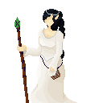

<!DOCTYPE html>
<html lang="en-US">
<head><head>
	<script src="https://code.jquery.com/jquery-3.3.1.min.js"></script>
	<script src="https://cdn.jsdelivr.net/npm/jquery.terminal/js/jquery.terminal.min.js"></script>
	<meta charset="utf-8">
	<meta name="viewport" content="width=device-width, initial-scale=1">
	<title> TWErminal </title>
	<link rel="stylesheet" href="https://cdn.jsdelivr.net/npm/jquery.terminal/css/jquery.terminal.min.css"/>
	<link rel="icon" type="image/x-icon" href="images/TWEbsiteFavicon.png">


</head>

<body>


	<script>
	$('body').terminal({
	    hello: function(name) {
	        this.echo('Hello, ' + name +
	                  '. Welcome to TWErminal.');
	    },
	    mara: function() {
	    	this.echo('\n\n ------------------------<==============>--<==============>------------------------\n\n');
	    	this.echo($(''));
	    	this.echo("Mara Ostren, an assassin and adventurer sighted in Enthan, Taria, and Chet'Tun. Her parentage is unknown.")
	    	this.echo("\n\nUPDATE: Mara was raised as an assassin with the Harachi tribe, but left the island in search of something to turn the tide of the war. She traveled with Sorcha Nikandros, Sybil Cerelia, Elethwyin Lore, and Eli Brangan. She crossed paths with the Tetrology of Mythology, Mess, and Dab Oss on many occasions.")
	    	this.echo("\n\nUPDATE: Though never publicly credited with the deed, Mara Ostren assassinated Emperor Henthan XLIV with the assistance of the rogue known as Aehtla. She did so in order to stop the emperor's plan to revoke the asylum he granted the remnants of her fleeing people. Aehtla tricked her and sent her safely home after the deed was done, allowing himself to be killed by the Golden Gilgryph in her place. Elethwyn Lore, her close friend, never learned of this act even as she allowed Mara to stay in her home.")
	    	this.echo("\n\nUPDATE: Mara Ostren was seen on The Day the Earth Shook. She fought alongside the heroes who defeated the Big Man once and for all.")
	    	this.echo("\n\nUPDATE: After working alongside Deyli Lonen to defeat the High Priest of Ocean and dethrone him, she serves as one of two chieftains of the Kun'Achi tribe. Mara also joined the newly forming Coalition out of desire to protect her island from the Arethian-Tarian war. She sent forth Archie and Ari as agents of the Kun'Achi to scout out the Heavens.")
	    	this.echo("\nSome Related Terms: chettun, deyli, kunachi, elethwyn, sybil, sorcha, eli, elin, dab, coalition, aehtla, mess, golden_gilgryph")
	    	this.echo('\n\n ------------------------<==============>--<==============>------------------------\n\n');
	    },
	    elethwyn: function() {
	    	this.echo('\n\n ------------------------<==============>--<==============>------------------------\n\n');
	    	this.echo($(''));
	    	this.echo("Elethwyn Lore, the daughter of Nethras and Adlanniel Lore. Paladin of Vulcan and Nike. An adventurer sighted in Enthan, Taria, and Chet'Tun. ")
	    	this.echo("\n\nUPDATE: Elethwyn traveled with Mara Ostren, Sorcha Nikandros, and Sybil Cerelia for some time. She was sighted at the Rebellion in Port Eyre, and fought to put the rebels down. Afterward, she retired from adventuring and returned to her family home in Great Enthan.")
	    	this.echo("\n\nUPDATE: Elethwyn Lore has replaced her father as Head of House Lore. This follows the tragic passing of her father and her mother both in the same night. Elethwyn has kept the fact that her father became a puppet of the Big Man secret, along with the fate of her monstrously transformed mother and the infiltration of her house staff by agents of the Big Man. Elethwyn was nearly killed by her transformed mother, but she survived with the help of one loyal guard and managed to purge her house of the taint of the Big Man.")
	    	this.echo("\n\nUPDATE: Elethwyn Lore was sighted on The Day the Earth Shook as a representative of her House. Shortly afterward, she took her loyal guardsman Reeve as her husband.")
	    	this.echo("\n\nUPDATE: Elethwyn Lore has born a child. She is named Sybil Lore, after Elethwyn's dear friend, and she is to be the future head of House Lore.")
	    	this.echo("\n\nUPDATE: Elethwyn Lore has ended the silence that reigned in her House since her father passed. She has given birth to her heir, Sybil Lore, and rejoins the Emperor's cabinet as a skilled advisor. In addition, she brought about a great blessing of Nike upon Great Enthan and sparked a revival of her worship.")
	    	this.echo("\n\nUPDATE: Elethwyn Lore has joined the newly forming Coalition out of a desire to protect the world and her home nation from the fires of the Arethian-Tarian war. She brought Nick Knack with her on a mission to scout out the Heavens.")
	    	this.echo("\nSome Related Terms: mara, sybil, sybil_lore, sorcha, dab, coalition, reeve, house_lore, emperor, enthan, nick_knack, ")
	    	this.echo('\n\n ------------------------<==============>--<==============>------------------------\n\n');
	    },
	    chettun: function() {
	    	this.echo('\n\n ------------------------<==============>--<==============>------------------------\n\n');
	    	this.echo("The one island left in the inner sea of TWE. This island was once one of many, but the Great Calamity changed that on the 88th of Winter in the year 4358. It was spared by the god of the sea, Ocean himself. A schism arose in the Kun'Achi tribe at this time, with the eastern half of the tribe increasing their worship of the deity around his seat of power and the western half rebelling against him and seeking to dethrone him. The eastern portion of the tribe became known as the Kun'Haman, and the western portion took the name Harachi.")
	    	this.echo("\n\nUPDATE: After 100 years of war, Mara Ostren of the Harachi joined forces with Deyli Lonen of the Kun'Hamans to dethrone Ocean and bring peace to the island. This would have been impossible if it weren't for the support of Sorcha Nikandros, Sybil Cerelia, Eli Brangan, and Dab Oss. The newly reunited Kun'Achi tribe refers to itself as 'the masters of the sea' and boast the most comprehensive sailing knowledge and shipwright skills in TWE. Hydrokineticists can be found in this tribe.")
	    	this.echo("The island itself is pretty large, boasting smaller islands toward the west, a mountain range that spans its upper regions, a frosty peak, and lush jungles that reach to sandy shores. The shrine of Ocean sits in the east, though it has been toppled and Ocean no longer reigns there.")
	    	this.echo("\nSome Related Terms: harachi, kunhaman, seer_peak, deyli, kun'achi, elethwyn, sybilc, sorcha, eli, elin, dab")
	    	this.echo('\n\n ------------------------<==============>--<==============>------------------------\n\n');
	    },
	    sybil: function() {
	    	this.echo('\n\n ------------------------<==============>--<==============>------------------------\n\n');
	    	this.echo($(''));
	    	this.echo("Sybil Cerelia, a Precedent Elven witch who was seen adventuring in Enthan, Taria, and Chet'Tun. She belongs to the Cerelia family of Precedents.")
	    	this.echo("\n\nUPDATE: Sybil has joined with Mara Ostren, Sorcha Nikandros, and Elethwyn Lore. The group travels and fights together, seemingly aimlessly. Her patterns indicate a search for her estranged relatives.")
	    	this.echo("\n\nUPDATE: Sybil inherited the aether attunement of her mother, allowing her to grow into an incredibly powerful witch. Ahnahn Saper, servant of the gods, is hunting her down. Dab Oss, while not outright hunting her, sees her as a threat. She wrote down a translation of her native tongue into common, a text that made its way into the hands of Olivia Bifelgos.")
	    	this.echo("\n\nUPDATE: Sybil has found and rescued her twin siblings, Silas and Surie, from the experimentation of the Big Man.")
	    	this.echo("\n\nUPDATE: Sybil has gained the blessing of Vulcan along with Eli Brangan, her new ally. She had a hand in the defeat of Philane and the dethroning of Ocean. She assisted Mess in recovering his memories from Ocean. During this, she spoke with her mother. Sidra Cerelia told her to kill Eli Brangan in order to stop Julara Saper from observing her location. Sybil considered, but didn't act.")
	    	this.echo("\n\nUPDATE: During her time on the island, Sybil faced Ahnahn and is the impetus for Saper's falling out with her masters. Ahnahn fought Sorcha, Mara, Silas, Surie, Dab, and Eli, winning and using Wildfire to purge Ysri's spirit from Sybil, breaking her connection to her family power. In the aftermath of Ahnahn's fleeing, Sybil tried to kill unconscious Eli. Silas stopped her so he could do it. Dab stopped him. Mara knocked Sybil out and was knocked out by Silas. In the end, there was a schism between the party and Dab. Eli was not killed.")
	    	this.echo("\n\nUPDATE: Sybil was seen on the Day the Earth Shook, fighting to bring down the Big Man. She brought a stray dog into the fray with her, and the death of the animal incited her wrath.")
	    	this.echo("\n\nUPDATE: Sybil entered the Uncrossable with Mara Ostren, Sorcha Nikandros, and Eli Brangan. She perished there, in overgrown ruins that still lie unexplored. Her death marked the end of the adventures of her group.")
	    	this.echo("\nSome Related Terms: mara, sorcha, elethwyn, cerelia, silas, surie, stolk, selena, saper, mess, philane, aether, ysri")
	    	this.echo('\n\n ------------------------<==============>--<==============>------------------------\n\n');
	    },
	    sorcha: function() {
	    	this.echo('\n\n ------------------------<==============>--<==============>------------------------\n\n');
	    	this.echo($(''));
	    	this.echo("Sorcha Nikandros, an ex-gladiator and adventurer from Great Enthan who traveled with Mara Ostren, Sybil Cerelia, and Eli Brangan. She has been sighted in Enthan, Tara, and Chet'Tun.")
	    	this.echo("\n\nUPDATE: Sorcha participated in the dethroning of Ocean and played a role in the discovery of the Zodiac Ox. She formed a bond with him, calling him Rob.")
	    	this.echo("\n\nUPDATE: Sorcha has lost her memory and developed new abilities in the form of Magunesis. Rob is key in the recovery of her memories.")
	    	this.echo("\n\nUPDATE: Rob's back was broken saving Sorcha and Mara from a fall. Elin, a new friend met on the island, did not survive the fall. Sorcha initiated the combat that led to an alliance between Mara and Deyli. Afterward, she assisted with defeating Philane and dethroning Ocean. She did not act in the falling out that followed.")
	    	this.echo("\n\nUPDATE: Sorcha was seen on the Day the Earth Shook, where she fought to defeat the Big Man.")
	    	this.echo("\n\nUPDATE: After the disbanding of her adventuring party, Sorcha returned to the Coliseum in Great Enthan where she trains gladiators and advocates for reform.")
	    	this.echo("\nSome Related Terms: mara, elethwyn, sybil, elin, zodiac, coliseum, magunesis")
	    	this.echo('\n\n ------------------------<==============>--<==============>------------------------\n\n');
	    },
	    elin: function() {
	    	this.echo('\n\n ------------------------<==============>--<==============>------------------------\n\n');
	    	this.echo("Elin is an adventurer from Gruss who was seen briefly on Chet'Tun. It is unclear how Elin arrived on the island, but she claimed to have swam there and scaled the northern cliffs. Elin was a brave and bold soul who fell in with Mara Ostren, Sorcha Nikandros, and Sybil Cerelia for a short time.")
	    	this.echo("\n\nUPDATE: Shortly after joing with them, Elin dies saving her new friends from a great fall down Seer's Peak. She is remembered with a grave at the base.")
	    	this.echo("\nSome Related Terms: mara, sorcha, sybil, seer_peak")
	    	this.echo('\n\n ------------------------<==============>--<==============>------------------------\n\n');
	    },
	    tarphet: function() {
	    	this.echo('\n\n ------------------------<==============>--<==============>------------------------\n\n');
	    	this.echo("The final living Harachi Seer. Tarphet was venerable when the Kun'Haman forces overwhelmed the Harachi. When Seer's Peak was scoured, Tarphet avoided detection by positioning himself beneath the snow and assuming a gazing stance. He slowed his body's natural processes so much that he was undetected, allowing him to remain in that position for a long time before Mara Ostren came to him. He passed the secrets of the Harachi Seers to her before passing on.")
	    	this.echo("\nSome Related Terms: harachi, mara, seer_peak, kunhaman")
	    	this.echo('\n\n ------------------------<==============>--<==============>------------------------\n\n');
	    },
	    seer_peak: function() {
	    	this.echo('\n\n ------------------------<==============>--<==============>------------------------\n\n');
	    	this.echo("The tallest mountain on Chet'Tun. It is positioned central to the island on the western side of the dividing river, in Harachi territory. From the frozen peak, Harachi Seers would spy out targets for their assassins to strike.")
	    	this.echo("\nSome Related Terms: harachi, chettun, mara, tarphet")
	    	this.echo('\n\n ------------------------<==============>--<==============>------------------------\n\n');
	    },
	    harachi: function() {
	    	this.echo('\n\n ------------------------<==============>--<==============>------------------------\n\n');
	    	this.echo("The Chet'Tunian tribe that has dwelled on the western side of the island for over 100 years. It was once one people with the Kun'Haman tribe in the east, but the two tribes have been at war for the last 100 years since the 88th of Winter, 4358. The Harachi side of the island is more jungle than the east, and the Harachi use it well. They trained skilled assassins to move nimbly through the arboreal terrain and strike unexpecting targets. They also used Seer's Peak to train skilled seers who could spy key targets and give directions to assassins. They despise Ocean for his role in the Calamity and seek to dethrone him.")
	    	this.echo("\n\nUPDATE: The Harachi have fallen. Their warriors are no more. Their seers have been slain and their last assassin has fled the island. The remaining elderly and young have evacuated the island and seek asylum in Enthan following the ravaging attack of the Kun'Hruss.")
	    	this.echo("\n\nUPDATE: Mara Ostren has saved the Harachi tribe. The war is over and the remnants of the Harachi have taken up residence in Kun'Haman territory until the Kun'Hruss have been wiped out.")
	    	this.echo("\n\nUPDATE: The Harachi tribe has disbanded. Instead, it is now a part of the Kun'Achi tribe as a symbol of the unity desired by chieftains Deyli Lonen and Mara Ostren.")
	    	this.echo("\nSome Related Terms: kunhaman, kunachi, mara, deyli, seer_peak")
	    	this.echo('\n\n ------------------------<==============>--<==============>------------------------\n\n');
	    },
	    kunhaman: function() {
	    	this.echo('\n\n ------------------------<==============>--<==============>------------------------\n\n');
	    	this.echo("The Chet'Tunian tribe that has dwelled on the eastern side of the island for over 100 years. It was once one people with the Harachi tribe in the west, but the two tribes have been at war for the last 100 years since the 88th of Winter, 4358. The Kun'Haman side of the island is flatter, with more rivers and shoreline than the west, and the Kun'Haman use that to their advantage. They train their soldiers to be hardy, aware, and skilled in the water. They revere Ocean for his choice to save Chet'Tun from the Calamity, and enjoy his blessings. Hydrokineticists are some of their strongest warriors.")
	    	this.echo("\n\nUPDATE: The Kun'Haman have become a theocratic state under the influence of Philane, High Priest of Ocean. Knowledge, books, and speech have become regulated as Philane maintains his authority and the loyalty of the people. Deyli Lonen is raised in this environment, losing her father to Philane's regime.")
	    	this.echo("\n\nUPDATE: The Kun'Haman tribe have achieved victory. Thanks to the creation of the Kun'Hruss, a mutation and enhancement of the Hun'Haman warriors, the Harachi have been wiped out in a surprise push. Captain Deyli Lonen is assigned to patrol the island. Her job is to locate and eliminate the remnants of the Harachi and the final Harachi assassin if she returns to the island.")
	    	this.echo("\n\nUPDATE: Deyli Lonen has joined forces with Mara Ostren, treacherously attacking Philane and giving Mara the chance to eliminate him and dethrone Ocean. Deyli has saved the Kun'Haman tribe. The war is over.")
	    	this.echo("\n\nUPDATE: The Kun'Haman tribe has disbanded. Instead, it is now a part of the Kun'Achi tribe as a symbol of the unity desired by chieftains Deyli Lonen and Mara Ostren.")
	    	this.echo("\nSome Related Terms: harachi, kunachi, mara, deyli, kunhruss, philane, hydrokineticist")
	    	this.echo('\n\n ------------------------<==============>--<==============>------------------------\n\n');
	    },
	    deyli: function() {
	    	this.echo('\n\n ------------------------<==============>--<==============>------------------------\n\n');
	    	this.echo("Deyli Lonen, a Kun'Haman scholar and soldier. Her parents were Kinar and Mipha Lonen, and she was raised under Philane's theocratic state. Her father was a scholar who learned too much. His writings were discovered, deemed heretical, and he was killed when Deyli was young. Deyli holds a grudge against Philane and Ocean. She has been working on a revenge plot ever since her childhood.")
	    	this.echo("\n\nUPDATE: Deyli Lonen has risen to the rank of Captain. Her study of the arcane compliments her martial training, allowing her to enchant her weapons. She has gathered a team that is loyal to her, allowing her to make steps toward the realization of her plan. She has documented her plans in her diary.")
	    	this.echo("\n\nUPDATE: Deyli Lonen has executed her plan, capturing Mara Ostren and her companions as they made their way across the central mountain range into Kun'Haman territory. Instead of executing her, she joins forces with Mara and makes a plan to deceive Philane and give the assassin a chance to kill him. The plan is a success. Philane is slain and Ocean is dethroned, leaving the tribe open to a hostile military takeover by Deyli.")
	    	this.echo("\n\nUPDATE: Deyli Lonen now serves as one of two chieftains of the newly formed Kun'Achi tribe, working to secure peaceful relations between the two peoples and slowly eradicating the Kun'Hruss from the Harachi side of the island. She now forms plans to investigate the Uncharted and supports Mara in her Coalition work.")
	    	this.echo("\nSome Related Terms: kunhaman, mara, lonen, philane, kunachi, deyli_unit")
	    	this.echo('\n\n ------------------------<==============>--<==============>------------------------\n\n');
	    },
	    deyli_unit: function() {
	    	this.echo('\n\n ------------------------<==============>--<==============>------------------------\n\n');
	    	this.echo("A skilled team of 8 warriors gathered by Deyli Lonen to serve as her military unit. They are a highly coordinated combat squad separated into 4 regiments: The Shield, Sword, Lancer, and Archer regiments each containing 2 warriors. After the war ended, the unit serves as a personal detail for Chieftain Lonen.")
	    	this.echo("\n\nUPDATE: One of the 8 members has been taken by Wavvos, the Pirate King. Deyli is putting together plans to retrieve him.")
	    	this.echo("\nSome Related Terms: lonen, wavvos, deyli_sword_regiment, deyli_shield_regiment, deyli_lancer_regiment, deyli_archer_regiment")
	    	this.echo('\n\n ------------------------<==============>--<==============>------------------------\n\n');
	    },
	    lonen: function() {
	    	this.echo('\n\n ------------------------<==============>--<==============>------------------------\n\n');
	    	this.echo("The surname of a small family that has only recently come into prominence. The name comes from the Kun'Achi word 'henen' meaning 'knowledge gatherer' and the common word 'lone'. The first member of this family to achieve renown is Deyli Lonen, the daughter of Kinar and Mipha Lonen.")
	    	this.echo("\nSome Related Terms: deyli, kinar, mipha")
	    	this.echo('\n\n ------------------------<==============>--<==============>------------------------\n\n');
	    },
	    kinar: function() {
	    	this.echo('\n\n ------------------------<==============>--<==============>------------------------\n\n');
	    	this.echo("Kinar Lonen was a scholar and a carpenter who died on the 4th of Winter, 4444. He lived in the Kun'Haman tribe during Philane's theocratic rule and, due to his insatiable curiosity and desire for the truth, began researching and avidly writing his findings. He recorded gaps in the histories presented by the followers of Ocean, collected banned books, and spent significant time gathering any knowledge he wasn't allowed to possess. His life's work drove his wife away from him and ultimately led to his death when his writings were discovered. He raised and taught his daughter, Deyli, how to think for herself.")
	    	this.echo("\nSome Related Terms: lonen, deyli, mipha, kunhaman, philane, arcane")
	    	this.echo('\n\n ------------------------<==============>--<==============>------------------------\n\n');
	    },
	    mipha: function() {
	    	this.echo('\n\n ------------------------<==============>--<==============>------------------------\n\n');
	    	this.echo("Mipha Lonen was the wife of Kinar Lonen and the mother of Deyli. She was ambitious, but constantly frustrated by her husband's insistence on writing. She had hoped that having a daughter would inspire Kinar to put his pen down or, at least, to use it to make more money. When he instead insisted on teaching little Deyli, Mipha gave up. She left the two of them in search of prosperity, which she found at the Shrine of Ocean. There, she informed the priests of her ex-husband's wrongdoings in exchange for compensation.")
	    	this.echo("\nSome Related Terms: lonen, kinar, deyli, kunhaman")
	    	this.echo('\n\n ------------------------<==============>--<==============>------------------------\n\n');
	    },
	    zodiac: function() {
	    	this.echo('\n\n ------------------------<==============>--<==============>------------------------\n\n');
	    	this.echo("A reclusive and mysterious order of cults that have been glimpsed around That Which Exists.")
	    	this.echo("\n\nUPDATE: The Sanctum of the Ox has been discovered in the Enthan Wastes. Mara Ostren, Sorcha Nikandros, Sybil Cerelia, and Elethwyn Lore found the sanctum and befriended the magical ox that acted as a key to it. They made their way in through the perilous entrance. They found remnants of a people there, wearing ox-themed clothing and using ox-inspired combat styles. The ox people were hostile on sight and seemingly without thought. In the depths of the sanctum, the ox leader was defeated and his weapon, the Shield of the Ox, was taken from him. The Shield of the Ox now belongs to Elethwyn Lore and is displayed in her family home. Rob the Ox is still bonded to Sorcha Nikandros.")
	    	this.echo("\n\nUPDATE: The Sanctum of the Snake has been discovered in the Tarian Jungle. Nin Jay, Choki Skarpsvard, Sahasrafaht, and Remora Saper found the sanctum and made peace with the magical snake that acted as a key to it. They made their way in and met one living woman who quickly befriended them. Together, they fought through groups of snake cultists that were long since dead, animated by their snake-themed armor. Choki took the armor off one of the corpses and put it on, falling prey to its power and attacking his friends until they managed to knock him out. Sahasrafaht fell into a pool of lava during their descent, perishing before they reached the cult leader in the depths of the sanctum. The woman they met betrayed them during the final fight, but Remora summoned a demon to aid them and they were victorious. Nin took the Shortbow of the Snake with him on his journey and still keeps it to this day.")
	    	this.echo("\n\nUPDATE: The Sanctum of the Dog has been discovered in Novali territory, Gruss. Nin Jay, Romboni, Chris, Marvin, and Jessica discovered the sanctum and befriended the magical dog that acted as a key to it. They entered the dilapidated manor and found it mostly empty. They split up and were caught off-guard. Nin and Jessica were cornered in an attic and fled, meeting up with Chris and Romboni. They could not find Marvin and he was slain in a wardrobe on the other side of the house. The group defeated the primal hunting pack of men and faced off against the butler of the manor. Defeating him, they took the Shortsword of the Dog and Chris holds it to this day. In a basement, they discovered a massive acidic green slime surrounding a sample of freezing metal. Frigite and refined Cold Iron. They took this metal with them.")
	    	this.echo("\n\nUPDATE: The Sanctum of the Goat has been discovered in the Olympian mountain range in central Taria. Poppy Keeper, Aurora Borealis, Nyx, Damien Belmont, and Deandra discovered the sanctum by following the magical goat that acted as a key to it. They entered its forgetting seal and found it under attack by a new cult serving 'the lady of venom'. They intervene, saving the goat cult and leaving without the sacred weapon or the friendship of the goat, choosing to save one of the attacking cult members. Damien shows the cult member the error of his ways and they release him into the world.")
	    	this.echo("\nSome Related Terms: cults")
	    	this.echo('\n\n ------------------------<==============>--<==============>------------------------\n\n');
	    },
	    kunhruss: function() {
	    	this.echo('\n\n ------------------------<==============>--<==============>------------------------\n\n');
	    	this.echo("An entirely new subspecies of human created by the Kun'Haman in order to defeat the Harachi once and for all. Created with assistance from the Big Man as a part of her plan to manipulate world events prior to the Day the Earth Shook. The Kun'Hruss are strong humans with claws and an insatiable bloodlust. They are unrefined, but they served their purpose well enough. They now infest the western side of Chet'Tun, making resettling efforts more difficult.")
	    	this.echo("\nSome Related Terms: chettun, philane, kunhaman, harachi, the_big_man, kuru")
	    	this.echo('\n\n ------------------------<==============>--<==============>------------------------\n\n');
	    },
	    the_day_the_earth_shook: function() {
	    	this.echo('\n\n ------------------------<==============>--<==============>------------------------\n\n');
	    	this.echo("The 84th of Fall, 4458. The day when the Big Man rallied her army and waged open war against Enthan. Her forces consisted of agents from all over That Which Exists, including but not limited to: Grussian Wildmen, Arethian Fluxcasters, Tarian Manabounds, Enthan RuneKnights, and hordes of monstrous mutated abominations. The Big Man was opposed by Emperor Arden, the forces of Enthan, warriors from the newly formed Kun'Achi tribe, the newly emerged Darkers, and a large collection of powerful adventurers. The battle was bloody, but the Enthan forces were ultimately victorious. The Big Man's true plan was to take control of the Catacombs through the use of Eros and Lymnus, but a group of adventurers pushed through her forces, defeated her commanders, and faced her in the remnants of the old Darker Village. The Big Man fell when Chris the Storyteller stabbed her with a butter knife one time. The following adventurers faced the Big Man in combat and ascended into legend: Dab Oss, Mara Ostren, Sorcha Nikandros, Sybil Cerelia, Eli Brangan, Nin Jay, Romboni, Jessica, and Chris the Storyteller.")
	    	this.echo("\n\nUPDATE: This day marks the first appearance of Abominations on the world scene. They are people from various races twisted, mutated, and merged with each other and animals to create monstrous affronts to nature. In the aftermath of the Big Man's death, their minds are freed from control and they have scattered and fled.")
	    	this.echo("\n\nUPDATE: Many heroic lives were lost on this day. Among them: Hakshi Uluethu was vaporized by the Big Man; Julara Saper was stabbed through the chest by Ray's blade; Reysan the companion of Dab Oss was cut down in the Catacombs, and Spark the pet of Sybil Cerelia was torn apart by dogs of war.")
	    	this.echo("\n\nUPDATE: This day was not part of the Big Man's master plan. It was forced to occur early due to the intervention and machinations of Dab Oss and Hakshi Uluethu. She attempted to turn the tables with the use of widespread mind control, but this was anticipated and countered using a custom spell crafted by Julara Saper at Dab and Hakshi's request.")
	    	this.echo("\nSome Related Terms: the_big_man, dab, hakshi, saper, ray, reysan, darkers, catacombs, spirits, abominations, arden, kunachi")
	    	this.echo('\n\n ------------------------<==============>--<==============>------------------------\n\n');
	    },
	    the_big_man: function() {
	    	this.echo('\n\n ------------------------<==============>--<==============>------------------------\n\n');
	    	this.echo("A powerful and elusive kingpin with agents in every corner of That Which Exists. Acts from the shadows, makes detailed plans, and has his hands in seemingly every settlement and syndicate. Objective unknown.")
	    	this.echo("\n\nUPDATE: The Big Man is a small woman. She is smug, confident, and always prepared. She is always shadowed by a terrifying hulk of a man named Ronan. She has dealt directly with Mara Ostren, Sorcha Nikandros, Elethwyn Lore, and Sybil Cerelia through deal making. She kidnapped Sybil through the use of the Enthan Rebellion, acquiring a translation key for the Precedent language before being forced to relinquish her by the unexpected arrival of Ahnahn Saper and Ray. She was not captured.")
	    	this.echo("\n\nUPDATE: The Big Man has dealt directly with Nin Jay, Choki Skarpsvard, Dimitri Floren, and Fortem. She conscripted them to sneak into the Camus University and kill three students. They took the job but instead chose to help the three students escape the school secretly. The students were named Aehtla, Elkciz, and Ayizar.")
	    	this.echo("\n\nUPDATE: The Big Man set up a secret laboratory and assigned it to a mad wizard named Cornelius for the purpose of Precedent testing. She captured Silas Cerelia and Surie Cerelia, subjecting them to horrific testing until Sybil Cerelia, Mara Ostren, Sorcha Nikandros, Elethwyn Lore, and Dab Oss slew Cornelius and freed them.")
	    	this.echo("\n\nUPDATE: The Big Man has succeeded in splicing people with monsters and animals. Dab Oss, assisted by his friend Reysan, begins to hunt her down.")
	    	this.echo("\n\nUPDATE: The Big Man is discovered to be pulling the strings of the Enthan Rebellion, using a man spliced with a Geminine to lead the Rebellion. Dab Oss discovers this after killing the leader twice, once alongside Sybil Cerelia, Mara Ostren, Sorcha Nikandros, and Elethwyn Lore and again alongside Ahnahn Saper.")
	    	this.echo("\n\nUPDATE: The Big Man makes a move against the Blue Sword, left by the Blue Swordsman in Sword Pass, Gruss. Dab Oss, Cheburek Semechki, Nin Jay, Jessica, Kuru, Aehtla, Ayizar, and Elkciz fight her and her bodyguard, Ronan. They succeed in stopping her from retrieving the sword and kill Ronan, but she escapes. In the process, Elkciz is taken over by the Blue Sword and forced to kill Ayizar before being slain herself by Nin.")
	    	this.echo("\n\nUPDATE: Elethwyn Lore discovers that the Big Man has gained control of House Lore and is using Nethras Lore to gather information and manipulate Emperor Henthan XLIV. Elethwyn cuts off this connection violently.")
	    	this.echo("\n\nUPDATE: Dab Oss enlists the help of Hakshi Uluethu to track down the Big Man. He discovers the true name of the Big Man to be Olivia Bifelgos. Dab creates wanted posters of Olivia and sends letters to his many allies to begin preparing to hunt her down.")
	    	this.echo("\n\nUPDATE: Olivia loses control over Emperor Henthan XLIV after Mara Ostren assassinates him. Bifelgos sends one of her commanders to assassinate the young Prince Arden before his Proving and Coronation, but is thwarted by Dab Oss, Hakshi Uluethu, and Reysan. The assassin escapes.")
	    	this.echo("\n\nUPDATE: Dab Oss discovers that Olivia is seeking out ancient Precedent ruins in different parts of TWE. Dab and Hakshi use the Catacombs with the help of the Darkers and Reysan to track down these locations and try to beat her there. After a failed attempt, they manage to catch her at the final location in the middle of a ritual. They try and fail to stop the ritual, allowing her to release the seals once holding ancient spirits in an eternal prison. She uses her runic magic to ensnare two of them, Eros and Lymnus, as they flee. She then flees.")
	    	this.echo("\n\nUPDATE: Dab Oss and Hakshi go to Julara Saper and use her to divine what the world might be like if Olivia Bifelgos is not stopped. They behold a world absolutely under the authority and watch of the Big Man, sporting large Eye imagery. They decide this future is dark and work with Julara to create countermeasures for what they expect Olivia's next move to be.")
	    	this.echo("\n\nUPDATE: Olivia Bifelgos makes her move, her timetables forced to accelerate by the preparations being made against her and the revelation of her identity. She uses her power over Eros and Lymnus to ensnare the Catacombs and use them to transport her forces to the Great Plains of Enthan on the Day the Earth Shook. Her forces were routed and she fought a group of adventurers in the Catacombs alongside her commanders.")
	    	this.echo("\n\nUPDATE: Olivia Bifelgos is dead. Her final battle was heard by people all around That Which Exists due to the Catacombs, and those who killed her have ascended into legend. Her commanders are dead and her empire has crumbled.")
	    	this.echo("\n\nUPDATE: Despite her death, the Big Man's influence can still be felt in all corners of That Which Exists due to her magical creations, ideology, followers, and legend. There exists a cult revering her and predicting her return.")
	    	this.echo("\nSome Related Terms: olivia_bifelgos, the_day_the_earth_shook, precedent, spirits, cornelius, geminine, aehtla, university, catacombs, arden, henthan_xliv, the_eye, blue_swordsman, sword_pass, bifelgos_commanders, saper")
	    	this.echo('\n\n ------------------------<==============>--<==============>------------------------\n\n');
	    },
	    olivia_bifelgos: function() {
	    	this.echo('\n\n ------------------------<==============>--<==============>------------------------\n\n');
	    	this.echo($(''));
	    	this.echo("The true name of the Big Man. Olivia Bifelgos was born on the 13th of Spring, 4436, the heiress of the wealthy Bifelgos trading family. She was quiet and intelligent, a dreamer who often forgot to pay attention to her surroundings in the midst of vivid visions of idyllic futures. She was attacked when she was young and was saved by a poor but very strong boy who never spoke. He was dimwitted but loyal, and the two became fast friends. She developed an ideology, believing that it was the responsibility of those in power to either use their power to fix the world or else have it taken from them. Her father and mother laughed at her suggestion. Being incredibly clever, she decided that she would pioneer this ideology herself and soon inherited the family fortune after a tragic accident. She called her friend Ronan and he served as her bodyguard as she spread her influence under the fake identity of a crime lord called 'The Big Man,' making deals and orchestrating the falls of important figures. She built a network that slowly spread across the world, allowing her to dream of a world where everything was under her control. Only then, when she had all the power, could she be sure that the downtrodden would be cared for and that merit would be rewarded.")
	    	this.echo("\n\nUPDATE: After years of planning, expanding, and seeking for a path to greater influence, Hecate is dethroned by Dab Oss, Nin Jay, Choki Skarpsvard, Dimitri Floren, and Fortem. With the goddess of magic out of the picture, Olivia sees her path to greater power and begins experimenting with previously impossible forbidden magic. She creates the Abominations.")
	    	this.echo("\n\nUPDATE: Olivia Bifelgos loses her Ronan to an intervening attack by Dab Oss and several others, thwarting her plans to wield the Blue Sword and stealing the life of her only friend.")
	    	this.echo("\n\nUPDATE: After acquiring a key to the Precedent language from Sybil Cerelia, Olivia pinpoints the exact locations of three Precedent Ruins that act as seals keeping immortal spirits of the world entrapped. She puts together a plan to harness their power, control the Catacombs, and finally realize her dream. She is taken by visions of a world where her all-seeing Eye can observe all and save all who need saving. Dab Oss continues to challenge her.")
	    	this.echo("\n\nUPDATE: On the 84th of Fall, 4458, Olivia Bifelgos is killed in the Catacombs, stopping her plans for world domination.")
	    	this.echo("\nSome Related Terms: bifelgos, ronan, the_big_man, dab, hecate, blue_swordsman, catacombs")
	    	this.echo('\n\n ------------------------<==============>--<==============>------------------------\n\n');
	    },
	    ronan: function() {
	    	this.echo('\n\n ------------------------<==============>--<==============>------------------------\n\n');
	    	this.echo("A poor boy born on the 3rd of Winter, 4433, to a woman of the night who cast him aside. He was strong, though, and survived on the streets until the day he saved a young girl named Olivia Bifelgos. He became her friend and followed her every request, serving as her protector with his great strength and silence. He believed in her, serving until the day he died protecting her.")
	    	this.echo("\n\nERROR: Records found concerning 'ronan' originating from outside of That Which Exists. Casting aside. Error code: <o>")
	    	this.echo("\nSome Related Terms: olivia_bifelgos")
	    	this.echo('\n\n ------------------------<==============>--<==============>------------------------\n\n');
	    },
	    philane: function() {
	    	this.echo('\n\n ------------------------<==============>--<==============>------------------------\n\n');
	    	this.echo("A man born to the Kun'Haman tribe on the 67th of Winter, 4386. He was an astute and clever man who saw opportunity in the conflict that had schismed the island. He rose through the ranks, serving Ocean and wielding hydrokinesis.")
	    	this.echo("\n\nUPDATE: Philane served as the high priest of Ocean during the last 51 years of the Chet'Tunian civil war. killed and replaced the high priestess before him. After only a season of his service, the Kun'Haman chieftain, Miramia, passed away due to poison in her sleep. With Miramia gone, Philane used his influence to convert the Kun'Haman tribe into a theocratic state. He maintained power by controlling education, communication, and the flow of information. He removed anyone who told the wrong stories and even made connection with the Big Man in order to develop methods of crushing the Harachi tribe once and for all.")
	    	this.echo("\n\nUPDATE: Philane serves to enable his godly master's cruelty. Mara Ostren discovers that Mess, the traveling bard, is routinely brought to the Shrine of Ocean by night and Philane brings him to Ocean's seat of power. There, he is stripped of any memories he is particularly fond of, leaving him to forever wander the world without lasting memory.")
	    	this.echo("\n\nUPDATE: Philane has been killed. Captain Deyli Lonen treacherously brought Mara Ostren and her companions to kill him under the guise of being captured. With his defeat, the way to Ocean's seat of power is opened and Mara destroys that as well. Thus, Ocean is dethroned and Mess is granted some of his lost memories.")
	    	this.echo("\nSome Related Terms: chettun, harachi, kunhaman, lonen, mara, mess, miramia")
	    	this.echo('\n\n ------------------------<==============>--<==============>------------------------\n\n');
	    },
	    miramia: function() {
	    	this.echo('\n\n ------------------------<==============>--<==============>------------------------\n\n');
	    	this.echo("Miramia was born to the Kun'Achi tribe on the 82nd of Spring, 4349. She was restless and angry, attributes that led her to excel in military service when war broke out and divided her tribe in two. She fought with the new Kun'Haman tribe until her valor was recognized.")
	    	this.echo("\n\nUPDATE: Miramia has risen to the rank of Captain. She has caught the attention of the high priestess of Ocean, who has seen fit to equip her with resources and a team of highly skilled specialists. She does not particularly care for the gods, but her strategic expertise and bloodlust have only grown. She is high effective, pushing the Harachi troops deep into the western jungles of the island and decimating every company she faces.")
	    	this.echo("\n\nUPDATE: Miramia's prowess is so unmatched that the Harachi are forced to adapt new strategies. They take to assassination, striking from the shadows and refusing to give Miramia a fair battle. This frustrates her, but she is growing old. She returns home a conquering heroine and the high priestess recommends her for the title of chief. She accepts the title, acting as general of the Kun'Haman forces.")
	    	this.echo("\n\nUPDATE: On the 53rd of Fall, 4406, Miramia passes away in her sleep. Officially, she was a legend who passed away peacefully. She was the first and last chieftain to rule the Kun'Haman tribe.")
	    	this.echo("\nSome Related Terms: kunhaman, harachi, kunachi, chettun")
	    	this.echo('\n\n ------------------------<==============>--<==============>------------------------\n\n');
	    },
	    kunachi: function() {
	    	this.echo('\n\n ------------------------<==============>--<==============>------------------------\n\n');
	    	this.echo("The ancient tribe that has inhabited the island of Chet'Tun since time immemorial. Since ancient times, the Shrine of Ocean has sat amongst them and empowered them with hydrokinesis. They are rich with culture, their dances embodying the powerful sense of community that has held them together. They are skilled sailors, weavers, and shipwrights.")
	    	this.echo("\n\nUPDATE: The Kun'Achi are no more. Following the great Calamity, the people of the tribe have split on the 7th of Spring, 4359. Half of the tribe stand by their god, thanking and praising him for sparing them from the tidal wave. The other half rages against him, condemning him for the destruction of the other islands and claiming his protection of Chet'Tun to be self-serving.")
	    	this.echo("\n\nUPDATE:  The two groups have taken on new names, the Harachi and the Kun'Haman, and they are at war.")
	    	this.echo("\n\nUPDATE: After 100 years of separation, on the 23rd of Summer, 4459, the Harachi and the Kun'Haman have reunited to reform the ancient tribe of Kun'Achi. The tribe is led by Mara Ostren, previously a Harachi assassin, and Deyli Lonen, previously a Kun'Haman captain.")
	    	this.echo("\n\nUPDATE: The tribe is facing difficulty assimilating with each other. Hatred still flares, the Kun'Hruss still roam the western portion of the island, and pirates have dared to threaten their waters.")
	    	this.echo("\n\nUPDATE: Despite its reunion, the tribe has forgotten its ancient lore. Chief Deyli Lonen leads efforts to recover information that was lost to war and Philane's theocracy.")
	    	this.echo("\nSome Related Terms: mara, deyli, harachi, kunhaman, calamity, philane")
	    	this.echo('\n\n ------------------------<==============>--<==============>------------------------\n\n');
	    },
	    calamity: function() {
	    	this.echo('\n\n ------------------------<==============>--<==============>------------------------\n\n');
	    	this.echo("The most terrifying show of force in the history of That Which Exists. On the 88th of Winter, 4358, a massive wave emerged radially from the Uncharted and swept across the inner sea of TWE. The wave destroyed all islands it struck, sinking them beneath the sea. Only Chet'Tun, the island where Ocean's shrine sits, was spared. The wave died suddenly before reaching the shores of the mainland.")
	    	this.echo("\n\nUPDATE: It is discovered that the wave was the result of the gods working together to display their power. The Calamity was used as a threat to force a group of seven deadly warriors into submission. These seven, known only as Those Who Exist, were subdued and cursed to be separated for all time.")
	    	this.echo("\n\nUPDATE: It is discovered that Ocean acted treacherously. The Calamity was intended to threaten Those Who Exist with the absolute destruction of all human life, but Ocean used his power to spare Chet'Tun where his shrine sat. This leads to him being despised by many of the gods.")
	    	this.echo("\nSome Related Terms: those_who_exist, gods, inner_sea, uncharted")
	    	this.echo('\n\n ------------------------<==============>--<==============>------------------------\n\n');
	    },
	    inner_sea: function() {
	    	this.echo('\n\n ------------------------<==============>--<==============>------------------------\n\n');
	    	this.echo("The massive body of water that sits at the center of That Which Exists. It is entirely cut off from the seas surrounding TWE. It contains many islands and is teaming with life both monstrous and humane.")
	    	this.echo("\n\nUPDATE: The Calamity has sunk all islands in the inner sea with the exception of Chet'Tun. Humane life from beneath the surface has ceased to appear.")
	    	this.echo("\n\nUPDATE: The King of the Pirates, Wavvos, has risen to power in the summer of 4402. He rules the inner sea with mystery and power.")
	    	this.echo("\n\nUPDATE: The Queen of the Pirates, Cira, has been slain by Nin Jay and his companions, Jessica Skarpsvard and Romboni on the 91st of Spring, 4458.")
	    	this.echo("\n\nUPDATE: New people have been sighted. Endura and Subdura have began appearing more frequently on the surface following the dethroning of Ocean in 4458.")
	    	this.echo("\n\nUPDATE: Followers of Saturn have been sighted on multiple occasions on the inner sea, sailing in Saturn-aligned ships. They are working on something, though it is not clear what.")
	    	this.echo("\n\nUPDATE: Maulter Yrdoc, Shadak, and Adiana Nontonk have voyaged into the depths of the inner sea briefly during their time sailing with Gareth Gorebeard. They discovered landmasses that sit on denser water, like underwater islands. These masses are described in some detail by unidentified writer on ancient, randomly discovered notes in bottles. The mystery writer goes by the initials 'R.J.'")
	    	this.echo("\n\nUPDATE: The Pirate King, Wavvos, disappears from public eye in 4461.")
	    	this.echo("\nSome Related Terms: uncharted, calamity, chettun, wavvos, cira, endura, subdura, skarpsvard, romboni, maulter, shadak, nontonk, gorebeard, rj")
	    	this.echo('\n\n ------------------------<==============>--<==============>------------------------\n\n');
	    },
	    uncharted: function() {
	    	this.echo('\n\n ------------------------<==============>--<==============>------------------------\n\n');
	    	this.echo("The Uncharted is the name used to refer to the massive fog cloud at the center of the inner sea. It is mysterious, inspiring many to venture in but none to return. Monsters come from the fog, but people never do.")
	    	this.echo("\n\nUPDATE: The Uncharted is the place from whence the Calamity came. Ever since, ships sailing too close to the fog have experienced huge waves and other assorted disasters dissuading them from coming close.")
	    	this.echo("\n\nUPDATE: After Athena was dethroned on the 16th of Spring, 4459, a secret was revealed about the Uncharted. It is the path to the place where the gods walk in the flesh and can be killed.")
	    	this.echo("\nSome Related Terms: calamity, gods, inner_sea")
	    	this.echo('\n\n ------------------------<==============>--<==============>------------------------\n\n');
	    },
	    gods: function() {
	    	this.echo('\n\n ------------------------<==============>--<==============>------------------------\n\n');
	    	this.echo("A term used to refer to the 17 ancient and powerful beings that act simultaneously as embodiments and rulers of various aspects of the natural world. The gods exist prior to human civilization, but have been given greater shape and definition by the worship of the different cultures around TWE. In the place where their worship is strongest, a shrine is built and a high priest is selected. Once that is done, the worshippers' perception and understanding of the deity shapes who they are and what they are like. It also grants them a seat of power, a magical chair that allows them to influence the natural world more strongly and empower their followers.")
	    	this.echo("\n\nNOTE: Each god may have only one seat of power at a time, solidifying their identity and tying it to the culture that shaped them. If their seat is destroyed, they lose their power and can be reinstated by new worshippers given enough time and the proper rituals. If this happens, they will once again change to match the interpretation of their worshippers.")
	    	this.echo("\n\nLIST: The 17 gods are known and more information about them can be found here: [https://nibble0x4.github.io/TWEbsite/lorePages/DeitiesPage.html].")
	    	this.echo("\n\nUPDATE: Hecate, the Tarian goddess of magic, has been dethroned from her shrine near Motham on the 39th of Summer, 4456 by Dab Oss, Nin Jay, Choki Skarpsvard, and Fortem. This releases previously forbidden dark magic, resulting in a rise of use and abuse of the arcane. Magic is both more free and more harmful now.")
	    	this.echo("\n\nUPDATE: Ocean, the lord of the sea, has been dethroned from his shrine in Kun'Hamar on the 4th of Summer, 4459 by Mara Ostren, Sorcha Nikandros, Sybil Cerelia, Eli Brangan, Dab Oss, and Deyli Lonen. This releases Ocean's control over the sea, leading to a destruction of the barrier that separated the depths of the inner sea and the surface.")
	    	this.echo("\n\nUPDATE: Vulcan, the Enthan god of the forge, casts down his servant Ahnahn Saper when she clashes with Sybil Cerelia, another of his followers. She becomes anathema and is hunted by the gods.")
	    	this.echo("\n\nUPDATE: Athena, the Tarian goddess of wisdom, has been dethroned from her shrine in Camus on the 16th of Spring, 4459 by an unidentified Arethian ninja during the naval assault on Port Bismuth. This releases the secrets kept in Athena's vault, meaning they can now be learned by other gods and mortals.")
	    	this.echo("\n\nUPDATE: Hypnos, the forgotten Tarian god of sleep, has been discovered by Maddox, Ruby, Ivory, and Soren. He gains a small amount of worshippers and followers and regains presence in the Ethereal Plane.")
	    	this.echo("\n\nUPDATE: Athena is on the run. Artemis, the Tarian goddess of the hunt, is sent to bring Athena before Zeus.")
	    	this.echo("\n\nUPDATE: Vulcan intercepts Artemis and fights her briefly, but she escapes from him. A god war is brewing, and deities are starting to take sides.")
	    	this.echo("\nSome Related Terms: dab, nin, skarpsvard, ethereal plane, cerelia, saper, lonen")
	    	this.echo('\n\n ------------------------<==============>--<==============>------------------------\n\n');
	    },
	    wavvos: function() {
	    	this.echo('\n\n ------------------------<==============>--<==============>------------------------\n\n');
	    	this.echo("Wavvos was born on the 74th of Summer, 4388. His parents are unknown. He was raised by the cult of Ocean in Kun'Haman territory and learned to sail. He hated being on dry ground and took very well to sailing. Something kept calling him back to the sea, and his eyes rarely left the horizon. He was called a hopeless romantic whenever he spoke of these things.")
	    	this.echo("\n\nUPDATE: In the summer of 4402, when he was 14, Wavvos made a name for himself on the inner sea. He became the captain of his own ship sailed uncontested. He had the blessing of Ocean alongside him, and he sailed in search of a perfect crew that he claimed was calling to him from around That Which Exists.")
	    	this.echo("\n\nUPDATE: Wavvos becomes known as the King of the Pirates as he grows older, despite never extendign authority over other crews. He gathers those with the Mark of the Sea into his crew. These people only partially transform, becoming powerful beings while remaining humanoid with their memories intact. His ship no longer needs to sail atop the sea and often disappears for long periods beneath the waves.")
	    	this.echo("\n\nUPDATE: On the 5th of Spring, 4454, Wavvos kills a dock manager and his wife at Port Thargas in order to take their young daughter, Leah, for his crew. Sorcha and Fortem try to stop him but fail. The girl is taken aboard his ship and granted the new name: Abo.")
	    	this.echo("\n\nUPDATE: Eli Brangan, childhood friend of Leah, meets Abo aboard Wavvos' ship. She remembers him fondly, but seems to love her captain and crew now as well. Abo feels like part of the family and refuses to leave. During the same visit, Wavvos takes Matthew from Deyli Lonen's personal detail into his crew. The chief swears vengeance at a later time.")
	    	this.echo("\n\nUPDATE: Eli Brangan, now separated from his companions after the death of Sybil Cerelia, sets off into the world in the winter of Fall, 4458 to gather powerful new allies to help him defeat Wavvos.")
	    	this.echo("\n\nUPDATE: In 4461, Pirate King Wavvos has not been sighted for seasons. Pirates grow bolder as they question his continued presence.")
	    	this.echo("\nSome Related Terms: kunhaman, inner_sea, port_thargas, leah, eli, sybil")
	    	this.echo('\n\n ------------------------<==============>--<==============>------------------------\n\n');
	    },
	    cira: function() {
	    	this.echo('\n\n ------------------------<==============>--<==============>------------------------\n\n');
	    	this.echo("Cira was born on the 11th of Winter, 4409 in Port Bismuth. Her parents are unknown. She became a bilge rat aboard a merchant ship at a young age, but the ship was taken over by pirates and she filled the same role aboard their ship. She grew up as a pirate from then on, paying close attention to the dynamics that unfolded between the authority figures around her.")
	    	this.echo("\n\nUPDATE: In the summer of 4428, Cira becomes the captain of a T2 pirate ship sailing under Captain Gareth Gorebeard.")
	    	this.echo("\n\nUPDATE: Cira gathers her own crew using Gorebeard's influence before finally breaking away from him in 4432. She raids a T4 battleship and takes it, manning it and assigning her old T2 to her first mate, Bertha. Her fleet only grows from there.")
	    	this.echo("\n\nUPDATE: Cira's fleet grows larger each season and, instead of breaking apart, the loyalty and fear she inspires in her underlings keeps them together. The first Pirate Fleet is formed and Cira uses her new power to force herself into an influential place in Port Bismuth aristocracy in Fall of 4445.")
	    	this.echo("\n\nUPDATE: On the 78th of Spring, 4446, Cira completes her takeover of Port Bismuth and claims the title of Pirate Queen. The Pirate King, Wavvos, does not appear to meet her challenge.")
	    	this.echo("\n\nUPDATE: On the 37th of Winter, 4454, Cira is challenged by and slaughters Choki Skarpsvard in a duel for his freedom.")
	    	this.echo("\n\nUPDATE: On the 52nd of Summer, 4456, Cira sails her fleet northward to face a fleet of Grussian ships. Nin Jay, Romboni, and Jessica Skarpsvard board her ship and Nin slays Cira with the Precedent Stone Bow in revenge for her slaughter of Choki. He loots her cabin and discovers Choki's axe and the Rapier of Salt.")
	    	this.echo("\nSome Related Terms: wavvos, port_bismuth, nin, skarpsvard, gorebeard, big_bellows")
	    	this.echo('\n\n ------------------------<==============>--<==============>------------------------\n\n');
	    },
	    big_bellows: function() {
	    	this.echo('\n\n ------------------------<==============>--<==============>------------------------\n\n');
	    	this.echo("Bertha Toera was born in Camus, Taria, on the 71st of Summer, 4422. She was instructed in magic and her parents expected her to attend University. She studied for years before she realized she was aetherless at the age of 9. She chose to run away from home instead of endure the disappointment of her parents.")
	    	this.echo("\n\nUPDATE: Bertha has dropped her last name. She nearly reached Port Bismuth when she was intercepted by the L'Mhigan crime family. She was grabbed and dragged into the bushes, but she screamed loud enough for passing adventurers to hear and come to her aid.")
	    	this.echo("\n\nUPDATE: Bertha is in Port Bismuth, penniless and bedraggled. One of the adventurers who saved her, named Scinna, took her under his wing and managed to get them both positions aboard a pirate ship.")
	    	this.echo("\n\nUPDATE: Bertha and Scinna have made names for themselves. They sail under Captain Cira. Bertha has grown large and strong, as Scinna anticipated, and she has surpassed him in the eyes of the captain.")
	    	this.echo("\n\nUPDATE: Bertha Big Bellows is assigned to be captain under the newly named Admiral Cira, with Scinna Whip Wraith as her first mate.")
	    	this.echo("\n\nUPDATE: In the summer of 4456, Bertha Big Bellows leaves the ruined fleet of Cira the Pirate Queen and strikes out on her own.")
	    	this.echo("\n\nUPDATE: In the spring of 4460, Bertha Big Bellows loses a naval battle against Gareth Gorebeard and and flees into the mainland of Chet'Tun alone. There, she is hunted down and killed by a group of pirates under the pact of a great and ancient Keeto. She is sacrificed to the monster.")
	    	this.echo("\nSome Related Terms: whip_wraith, cira, elder_keeto, camus, lmhigan_crime_family, toera_family")
	    	this.echo('\n\n ------------------------<==============>--<==============>------------------------\n\n');
	    },
	    whip_wraith: function() {
	    	this.echo('\n\n ------------------------<==============>--<==============>------------------------\n\n');
	    	this.echo("Scinna Bork was born in Endan Village, Enthan, on the 67th of Summer, 4413 to Sam and Jillian Bork. He was raised as a farmhand, but would sneak away often to get a glimpse of the outer sea to the southwest of the village.")
	    	this.echo("\n\nUPDATE: Scinna ran away from home, smuggling himself in the back of a trade caravan heading to Taria. He is discovered and run off when they arrive at Camus, where he joins a local gang known as the 'Vils' and steals to survive. His fellow gang members teach him some basic magic and the use of a whip.")
	    	this.echo("\n\nUPDATE: Scinna leaves Camus in the Spring of 4431 with a pair of adventurers named Larrs and Maron. The three of them save a young girl named Bertha from the L'Mhigan crime family on the way to Port Bismuth. He finds that he cannot stand their 'lovey-dovey' antics and leaves them when they arrive, taking Bertha with him. He sees much promise in the sturdy young girl and wants to see her grow.")
	    	this.echo("\n\nUPDATE: Scinna and Bertha secure a spot on the crew of Captain Cira. Bertha grows, just as Scinna expected, and thrives. He remains by her side as protector and mentor until their roles are reversed due to her sheer size and strength.")
	    	this.echo("\n\nUPDATE: In the summer of 4456, Scinna Whip Wraith serves as the first mate to Captain Bertha Big Bellows as she leaves the fleet of Pirate Queen Cira and becomes her own pirate.")
	    	this.echo("\n\nUPDATE: Scinna Whip Wraith is killed in the spring of 4460 during a naval battle against Gareth Gorebeard.")
	    	this.echo("\nSome Related Terms: big_bellows, lmhigan_crime_family, cira, gorebeard, larrs_goren, maron_essue")
	    	this.echo('\n\n ------------------------<==============>--<==============>------------------------\n\n');
	    },
	    larrs_goren: function() {
	    	this.echo('\n\n ------------------------<==============>--<==============>------------------------\n\n');
	    	this.echo("Larrs Goren was born in Motham on the 7th of Spring, 4412 to Rhemar and Ariella Goren. He left them in the summer of 4429 on good terms, with the mutual understanding that Larrs' relationship with magic must be his own. He is seen off by his parents.")
	    	this.echo("\n\nUPDATE: A few days later, Larrs is nearly killed by a witch who defeated him in a magical duel. He is saved by a paladin of Athena named Maron. The two of them fall in together, bickering constantly, but something about her sturdy, reliable nature keeps him from leaving her.")
	    	this.echo("\n\nUPDATE: In 4431, Larrs and Maron settle down in Port Bismuth as mercenaries honing their skills against the monsters and bandits that plague the area.")
	    	this.echo("\n\nUPDATE: In 4461, Larrs and Maron assist a strange crew of abominations on a mission against the L'Mhigan crime family. They refuse and offer to join the crew of Captain Frill.")
	    	this.echo("\nSome Related Terms: motham, goren_family, maron_essue, abominations, captain_frill, lmhigan_crime_family")
	    	this.echo('\n\n ------------------------<==============>--<==============>------------------------\n\n');
	    },
	    maron_essue: function() {
	    	this.echo('\n\n ------------------------<==============>--<==============>------------------------\n\n');
	    	this.echo("Maron Essue was born in Camus on the 81st of Summer, 4413 to Aldric and Lyra Essue. She left them in the summer of 4429 to pursue wisdom and growth in the world at large.")
	    	this.echo("\n\nUPDATE: A few days after setting out, she encounters a wizard named Larrs about to be killed by a forest witch in the woods south of Motham. She cuts down the witch and saves him, permitting him to accompany her. He is insufferable and they bicker constantly, but the keen mind he buries under his stupid smile and stumbling gait keeps her from leaving him.")
	    	this.echo("\n\nUPDATE: In 4431, Maron and Larrs settle down in Port Bismuth as mercenaries honing their skills against the monsters and bandits that plague the area.")
	    	this.echo("\n\nUPDATE: In 4461, Maron and Larrs assist a strange crew of abominations on a mission against the L'Mhigan crime family. They refuse and offer to join the crew of Captain Frill.")
	    	this.echo("\nSome Related Terms: essue_family, camus, gods, larrs_goren, captain_frill, lmhigan_crime_family, abominations")
	    	this.echo('\n\n ------------------------<==============>--<==============>------------------------\n\n');
	    },
	    goren_family: function() {
	    	this.echo('\n\n ------------------------<==============>--<==============>------------------------\n\n');
	    	this.echo("A family that has lived in Motham for as long as they can remember. They tend to remain quiet, keeping to themselves and enjoying a magic-filled life.")
	    	this.echo("\nSome Related Terms: larrs_goren, ariella_goren, rhemar_goren")
	    	this.echo('\n\n ------------------------<==============>--<==============>------------------------\n\n');
	    },
	    rhemar_goren: function() {
	    	this.echo('\n\n ------------------------<==============>--<==============>------------------------\n\n');
	    	this.echo("Rhemar Goren was born to the Goren family in Motham on the 87th of Fall, 4386. He was a quiet child who enjoyed practicing the occult in his day-to-day life. He was a model member of the family.")
	    	this.echo("\n\nUPDATE: In the Winter of 4403, Rhemar met a traveling half-elf woman named Ariella who took his breath away. She eventually gave it back, but not until she was sure she had won the wizard's duel. She followed him home.")
	    	this.echo("\n\nUPDATE: In the Winter of 4404, Rhemar married Ariella and brought her into the Goren family. Many questioned if he did so of his own accord, but she made him so happy that he never felt the need to explain to anyone else.")
	    	this.echo("\n\nUPDATE: Rhemar fathered Larrs in 4413.")
	    	this.echo("\nSome Related Terms: goren_family")
	    	this.echo('\n\n ------------------------<==============>--<==============>------------------------\n\n');
	    },
	    ariella_goren: function() {
	    	this.echo('\n\n ------------------------<==============>--<==============>------------------------\n\n');
	    	this.echo("Ariella was born to a hag in the forests of the Entho-Tarian mountain range. Her hag mother used an unfortunate elven man to make her, so she grew up fatherless.")
	    	this.echo("\n\nUPDATE: In the Winter of 4403, Ariella leaves her mother in search of a mage to defeat. She intends to prove herself capable before completing her transformation into a proper hag. She finds and defeats one easily, but is surprised to find that she is fascinated by him. She does not kill him and instead follows him home.")
	    	this.echo("\n\nUPDATE: Ariella's fascination with Rhemar Goren the mage who does not know combat magic has overtaken her. She enters into a human rite called marriage with him in the Winter of 4404.")
	    	this.echo("\n\nUPDATE: Ariella Goren has stopped hearing the Call. Instead, she hears the cries of her new son, Larrs.")
	    	this.echo("\nSome Related Terms: goren_family, hags, haglings")
	    	this.echo('\n\n ------------------------<==============>--<==============>------------------------\n\n');
	    },
	    essue_family: function() {
	    	this.echo('\n\n ------------------------<==============>--<==============>------------------------\n\n');
	    	this.echo("A family of good standing in Camus. They have strong ties to the cult of Athena, with their children often serving in the shrine.")
	    	this.echo("\n\nUPDATE: In 4459, when Athena is dethroned, the Essue family is mostly destroyed. A remnant of them escape into the surrounding land, intent on rallying and returning Athena to her throne.")
	    	this.echo("\nSome Related Terms: larrs_goren, ariella_goren, rhemar_goren")
	    	this.echo('\n\n ------------------------<==============>--<==============>------------------------\n\n');
	    },
	    lyra_essue: function() {
	    	this.echo('\n\n ------------------------<==============>--<==============>------------------------\n\n');
	    	this.echo("Lyra Essue was born the 35th of Fall, 4389 to the Essue family in Camus. She was taught the ways of Athena and grew up visiting the shrine often.")
	    	this.echo("\n\nUPDATE: In the Summer of 4399, Lyra Essue elected to dedicate her life to Athena as a priestess. She lived in the shrine, learning and teaching.")
	    	this.echo("\n\nUPDATE: In the Spring of 4404, Lyra develops a crush on an aspiring mercenary who rests at the shrine. The young man's name is Aldric.")
	    	this.echo("\n\nUPDATE: In the Summer of 4404, Lyra marries Aldric and brings him into the family.")
	    	this.echo("\n\nUPDATE: On the 81st of Summer, 4413, Lyra mothers her first child, Maron. She teaches her daughter the ways of Athena and the importance of new knowledge and experiences.")
	    	this.echo("\n\nUPDATE: In 4459, when Athena is dethroned, Lyra loses her life during the destruction of Camus.")
	    	this.echo("\nSome Related Terms: essue_family, gods, camus")
	    	this.echo('\n\n ------------------------<==============>--<==============>------------------------\n\n');
	    },
	    aldric_essue: function() {
	    	this.echo('\n\n ------------------------<==============>--<==============>------------------------\n\n');
	    	this.echo("Aldric grew up in the streets of Camus. His mother and father are unknown, and he was raised in the Vils gang. He learned to survive there, tattooing his body to enhance his strength and durability.")
	    	this.echo("\n\nUPDATE: In 4404, Aldric, who supposed himself to be 17 years old or so, stopped at the shrine of Athena. He saw a priestess there who he noticed blushing at him. He made up a story about being a mercenary and wooed her.")
	    	this.echo("\n\nUPDATE: Less than a full season later, Aldric's bold attempts at courting Lyra Essue, the priestess, led him to marry into her family. His primary goal was to get off the streets, but he did end up falling for her.")
	    	this.echo("\n\nUPDATE: On the 81st of Summer, 4413, Aldric Essue fathers his first child, Maron. He adores her and teaches her how to handle a blade.")
	    	this.echo("\n\nUPDATE: In 4459, Aldric Essue dies defending his wife in the shrine of Athena during the destruction of Camus.")
	    	this.echo("\nSome Related Terms: essue_family, camus, vils_gang")
	    	this.echo('\n\n ------------------------<==============>--<==============>------------------------\n\n');
	    },
	    vils_gang: function() {
	    	this.echo('\n\n ------------------------<==============>--<==============>------------------------\n\n');
	    	this.echo("A gang in the city of Camus. The gang mostly consists of younger orphans. The gang was formed in 4324 when a group of childless parents came together to find a way to provide for the abandoned children of the city.")
	    	this.echo("\n\nUPDATE: The gang makes a name for itself by using strength-boosting tattoos that help them assert themselves on the streets.")
	    	this.echo("\nSome Related Terms: aldric_essue, whip_wraith, camus")
	    	this.echo('\n\n ------------------------<==============>--<==============>------------------------\n\n');
	    },
	    camus: function() {
	    	this.echo('\n\n ------------------------<==============>--<==============>------------------------\n\n');
	    	this.echo("A city-state in the southern portion of That Which Exists. It was founded under the worship of Athena, goddess of wisdom.")
	    	this.echo("\n\nUPDATE: It is conquered in the Summer of 2037, by Emperor Henthan I, becoming an annexed portion of the Enthan Empire.")
	    	this.echo("\n\nUPDATE: On the 1st of Spring, 3027, Camus declares war on Emperor Henthan XIX alongside Bismuth, Shinta, and the Tri-Villages. Camus acts as the head of the rebellion due to both its geographic proximity to Enthan and the tactical prowess of its leaders.")
	    	this.echo("\n\nUPDATE: On the 63rd of Winter, 3106, Camus wins independence from Enthan and establishes the province of Taria. Camus becomes the capital city-state of the newly formed Tarian alliance.")
	    	this.echo("\n\nUPDATE: In the Spring of 3110, Agara the Elder begins the foundation of an unparalleled center of magical learning called a University, the first of its kind in That Which Exists.")
	    	this.echo("\n\nUPDATE: On the 40th of Winter, 3199, the University of Camus is completed, marking Camus as the undisputed center of learning in That Which Exists.")
	    	this.echo("\n\nUPDATE: In the Summer of 4459, Camus is laid siege by armies under the command of followers of Zeus, Hecate, and Artemis. The siege lasts for one season and results in the majority destruction of the city before it is interrupted by the Arethian invasion of Port Bismuth and the Tri-Villages.")
	    	this.echo("\n\nUPDATE: In the Fall of 4459, Athena is dethroned and the Camus University is destroyed in the absence of her military.")
	    	this.echo("\nSome Related Terms: agara, tarian_alliance, gods, henthan, bismuth, shinta, trivillages, university")
	    	this.echo('\n\n ------------------------<==============>--<==============>------------------------\n\n');
	    },
	    agara: function() {
	    	this.echo('\n\n ------------------------<==============>--<==============>------------------------\n\n');
	    	this.echo("Agara was born to a woman of the night in the backstreets of the city of Camus on the 70th of Summer, 3004. She was quiet, small, and often physically unwell. She grew up in the slums without much help from her mother, watching and learning from everything around her.")
	    	this.echo("\n\nUPDATE: Agara has grown tired of the struggle to eat. She reasons it would be more efficient if she had a small fraction of the resources possessed by the wealthiest denizens of Camus. To this end, she watches the Toera family and learns their habits, movements, and guard measures.")
	    	this.echo("\n\nUPDATE: In the Winter of 3016, Agara gathers a group of fellow slum-dwellers and successfully executes a complicated heist against the Toera family. She manages to pin the blame on a crime syndicate that was oppressing her portion of the city, leading to their arrest. In the process, she and her team acquired enough riches for a lifetime.")
	    	this.echo("\n\nUPDATE: In 3021, Agara notices that she is simply better at planning than anyone else around her. She reasons that she could improve the city just as much as she improved her own life if she were in a position of power. She uses her riches to identify and gather other powerful individuals with a dislike for Enthan rule.")
	    	this.echo("\n\nUPDATE: In 3023, Agara establishes the Council of Camus and uses it to make connections with other southern cities under Enthan rule.")
	    	this.echo("\n\nUPDATE: In 3027, Agara declares war on Enthan through the council and asserts herself as head strategist in wartime.")
	    	this.echo("\n\nUPDATE: In 3106, Agara the Clever accepts peace terms with Emperor Henthan, solidifying Taria as a sovereign nation.")
	    	this.echo("\n\nUPDATE: In 3110, Agara the Elder starts the foundation of her dream: The University of Camus. She dies several days after ground is broken, on the 33rd of Spring.")
	    	this.echo("\nSome Related Terms: camus, henthan, tarian_alliance")
	    	this.echo('\n\n ------------------------<==============>--<==============>------------------------\n\n');
	    },
	    tarian_alliance: function() {
	    	this.echo('\n\n ------------------------<==============>--<==============>------------------------\n\n');
	    	this.echo("The association of 4 city-states in the southern region of That Which Exists. Camus led as Bismuth, Shinta, and the Tri-Villages formed the Tarian Alliance when they declared war on Enthan in 3027.")
	    	this.echo("\n\nUPDATE: In 3106, the Tarian Alliance emerged victorious over Enthan and declared themselves independent. The province of Taria was formed afterward, with Camus as the capitol city-state. The city-states of Shinta, Bismuth, and the Tri-Villages are each independent, acting as an alliance led by Camus in times of crisis.")
	    	this.echo("\n\nUPDATE: In the Summer of 3971, the town of Motham is recognized as an independent city-state from Camus and becomes the fifth city-state in the Tarian Alliance.")
	    	this.echo("\n\nUPDATE: In the Summer of 4459, Camus is declared no longer the head of the Tarian Alliance and a siege is laid. During this siege, Areth declares war on the Tarian Alliance and the siege temporarily breaks.")
	    	this.echo("\n\nUPDATE: In the Fall of 4459, Camus falls and is destroyed. The Tarian Alliance no longer has a leader.")
	    	this.echo("\nSome Related Terms: taria, camus, shinta, motham, bismuth, trivillages")
	    	this.echo('\n\n ------------------------<==============>--<==============>------------------------\n\n');
	    },
	    toera_family: function() {
	    	this.echo('\n\n ------------------------<==============>--<==============>------------------------\n\n');
	    	this.echo("An influential family in Camus. They invested heavily in the foundation of the University of Camus when the project was proposed by Agara the Elder in 3110, and have benefitted from the success of the institution. Every child of the family pursues an education at the University.")
	    	this.echo("\n\nUPDATE: The Toera family has lost all influence with the destruction of the University and the city itself in 4459.")
	    	this.echo("\n\nUPDATE: In the aftermath of the fall of Camus, the Toera family has established a ward on the outskirts of the ruins in an effort to keep the refugees safe. The ward is called Toeria.")
	    	this.echo("\nSome Related Terms: big_bellows, camus, agara, university, toeria, arellia_toera")
	    	this.echo('\n\n ------------------------<==============>--<==============>------------------------\n\n');
	    },
	    toeria: function() {
	    	this.echo('\n\n ------------------------<==============>--<==============>------------------------\n\n');
	    	this.echo("A small refugee camp on the outskirts of the ruins of Camus founded in 4459 by the Toera family. The camp is protected by Professor Arellus Toera, an abjuration professor who has learned the magic of the Arcane Wellspring. He keeps the people of the camp under an invisibility spell at all times, disguising the camp as a derelict ghost town.")
	    	this.echo("\nSome Related Terms: arellus_toera, university, camus")
	    	this.echo('\n\n ------------------------<==============>--<==============>------------------------\n\n');
	    },
	    arellus_toera: function() {
	    	this.echo('\n\n ------------------------<==============>--<==============>------------------------\n\n');
	    	this.echo("Arellus Toera was born on the 55th of Winter, 4386 to the Toera family of Camus. He was an avid student with a slow wit that hampered him in his efforts to pass exams. His memory, however, was near perfect.")
	    	this.echo("\n\nUPDATE: In the Fall of 4402, Arellus achieved admission into the University and began studying abjuration.")
	    	this.echo("\n\nUPDATE: In the Spring of 4410, Arellus graduated from the University with excellent marks. Instead of leaving the school, he began research with the University.")
	    	this.echo("\n\nUPDATE: In the Summer of 4416, Arellus defended and published his work on aether studies. His research on the conservation of aether improved understanding of spell dissipation and furthered the study of runic systems.")
	    	this.echo("\n\nUPDATE: In the Spring of 4431, Arellus published a tome on the effects of time on abjuration magic. His insights continue to drive the development of stronger, longer-lasting abjuration spells.")
	    	this.echo("\n\nUPDATE: In the Winter of 4449, Arellus published a tome postulating a change in casting methodology, mixing ritualistic elements with traditional casting to drastically extend both casting time and spell duration.")
	    	this.echo("\n\nUPDATE: In the Summer of 5558, Arellus published a tome describing how, without Hecate limiting magic, abjuration spells could theoretically be maintained indefinitely so long as the source still maintains it.")
	    	this.echo("\n\nUPDATE: When Camus fell in 4459, Arellus acted on his theories and became the first Arcane Wellspring. He used his power to cast and maintain an invisibility spell on a ward of refugees, providing a safe haven in the aftermath of their homes being destroyed.")
	    	this.echo("\nSome Related Terms: toera_family, university, camus, toeria, gods, arcane_wellspring")
	    	this.echo('\n\n ------------------------<==============>--<==============>------------------------\n\n');
	    },
	    arcane_wellspring: function() {
	    	this.echo('\n\n ------------------------<==============>--<==============>------------------------\n\n');
	    	this.echo("A group of specialized wizards who appeared after the destruction of Camus and its university in 4459. Based on the research of Arellus Toera, the arcane wellsprings have learned to harness ritualistic magic to make their spells last as long as they can concentrate.")
	    	this.echo("\nSome Related Terms: camus, arellus_toera")
	    	this.echo('\n\n ------------------------<==============>--<==============>------------------------\n\n');
	    },


	    
	    guidelines: function() {
	    	this.echo("\n\n ------------------------<==============>--<==============>------------------------\n\nIn order to operate TWErminal, please abide by the following guidelines:\n\n TWErminal welcomes all your prompts, and will do his best to inform you about whatever you prompt him with. \n\n TWErminal is eager to serve, but easier to be confused. Please use only a single word at a time when prompting him. \n\n Please refrain from using any capital letters in your prompts. \n\n If you ever want to see these guidelines again, please prompt TWErminal with 'guidelines'\n\n ------------------------<==============>--<==============>------------------------\n\n\n\n");
	    },

	}, {
	    greetings: "TWErminal greets you. \n\n ------------------------<==============>--<==============>------------------------\n\nIn order to operate TWErminal, please abide by the following guidelines:\n\n TWErminal welcomes all your prompts, and will do his best to inform you about whatever you prompt him with. \n\n TWErminal is eager to serve, but easier to be confused. Please use only a single word at a time when prompting him. \n\n Please refrain from using any capital letters in your prompts. \n\n If you ever want to see these guidelines again, please prompt TWErminal with 'guidelines'\n\n ------------------------<==============>--<==============>------------------------\n\n\n\n",
	    prompt: '??> '
	});
	</script>


</body>
</html>